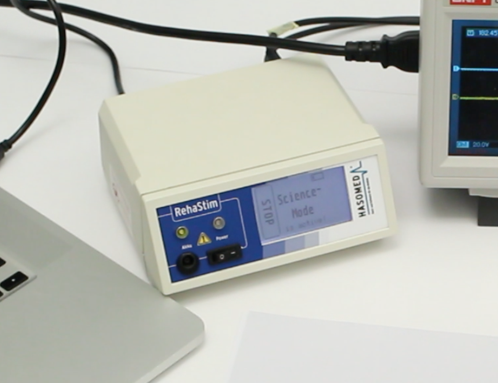
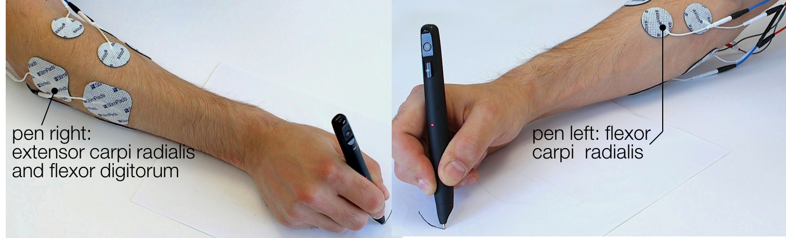
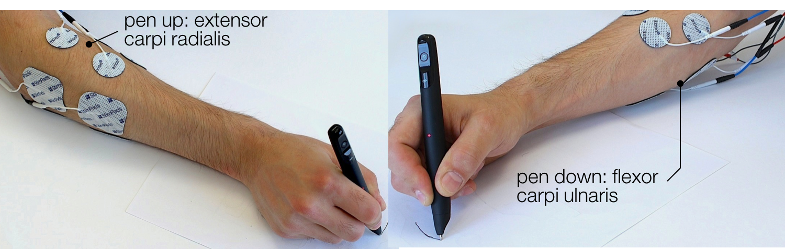

Muscle-Plotter
Table of Contents
1) Muscle-Plotter
- is an interactive system
- based on electrical muscle stimulation
- produces spacial output
builds on previous EMS systems to create an interface that enables elaborate sensemaking tasks
provides such an interface in very small form factors
2) related work (5 mins)
pen and paper stuff
- teddy
- mit actuated table
ems stuff
pose IO affordance ++
3) implementation
pen and paper interface for input and output
- Hardware Overview
- anoto pen for paper
- electrical muscle stimulation
- Software
- control loop
- application api
Anoto Pen and Paper
Figure 1: Anoto Pen
HASOMED EMS Machine
8 Channels sharing upto 400 pulses per second

Figure 2: EMS Machine
Pad Placement
Horizontal axis

Figure 3: Left and Right
Pad Placement
Vertical axis

Figure 4: Up and Down
handwriting recognition and spatial interactions
tesseract
4) user study
study preparation
Selection of curves
evaluation and results
results
5) application perpective pen and paper interactions
development process
design considerations
wind tunnel, math plots, forms, filter design…
wind tunnel filter design
6) limitations and future work
ems difficulties
ems machines haven't seem much improvement
7) Discussion?
Questions?